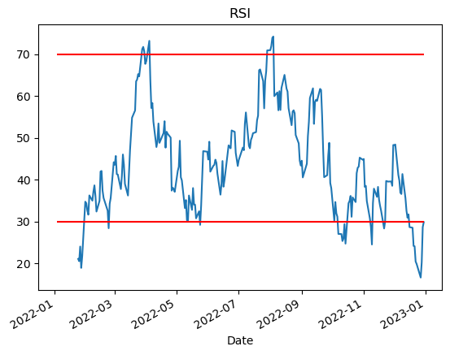
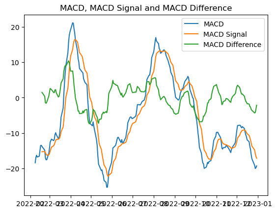

Análisis técnico#
AT usando la librería TA-Lib#
Esta librería está montada sobre C++, por lo que su instalación requiere pasos adicionales. En Anaconda:
Actualizar Anaconda a la última versión:
conda update --force condaInstalar librería complementaria (en C++):
conda install -c conda-forge libta-libInstalar TA-Lib:
conda install -c conda-forge ta-lib
Más info: https://pypi.org/project/TA-Lib/
import pandas as pd
import talib
import yfinance as yf
df = yf.download("TSLA", start = "2022-01-01", end = "2022-12-31")
[*********************100%%**********************] 1 of 1 completed
df["sma_20"] = talib.SMA(df["Adj Close"], timeperiod = 20)
df[["Adj Close", "sma_20"]].plot()
<Axes: xlabel='Date'>
df["RSI"] = talib.RSI(df["Adj Close"])
import matplotlib.pyplot as plt
fig, ax = plt.subplots()
df["RSI"].plot(ax = ax, title = "RSI")
ax.hlines(y=30, xmin = df.index.min(), xmax = df.index.max(), color = "red")
ax.hlines(y=70, xmin = df.index.min(), xmax = df.index.max(), color = "red")
plt.show()

df["MACD"], df["MACDSignal"], df["MACDHist"] = talib.MACD(df["Adj Close"],
fastperiod = 12,
slowperiod = 26,
signalperiod = 9)
fig, ax = plt.subplots(2,1,sharex = True)
df[["MACD", "MACDSignal"]].plot(ax=ax[0], title = "MACD")
ax[1].bar(df.index, df["MACDHist"].values, label = "macd_hist")
ax[1].legend()
<matplotlib.legend.Legend at 0x2732adbaf20>
Librería TA#
Una versión más liviana es la librería TA, aunque tiene menos funcionalidades que TA-Lib.
!pip install ta
import ta
df = yf.download("TSLA", start = "2022-01-01", end = "2022-12-31", auto_adjust=True)
df.head()
df2 = ta.add_all_ta_features(df, open = "Open", high = "High", low = "Low", close = "Close", volume = "Volume")
df2.head()
WARNING: Ignoring invalid distribution -yrsistent (c:\users\gabriel.valenzuela.o\appdata\local\anaconda3\lib\site-packages)
WARNING: Ignoring invalid distribution -yrsistent (c:\users\gabriel.valenzuela.o\appdata\local\anaconda3\lib\site-packages)
WARNING: Ignoring invalid distribution -yrsistent (c:\users\gabriel.valenzuela.o\appdata\local\anaconda3\lib\site-packages)
WARNING: Ignoring invalid distribution -yrsistent (c:\users\gabriel.valenzuela.o\appdata\local\anaconda3\lib\site-packages)
WARNING: Ignoring invalid distribution -yrsistent (c:\users\gabriel.valenzuela.o\appdata\local\anaconda3\lib\site-packages)
WARNING: Ignoring invalid distribution -yrsistent (c:\users\gabriel.valenzuela.o\appdata\local\anaconda3\lib\site-packages)
Requirement already satisfied: ta in c:\users\gabriel.valenzuela.o\appdata\local\anaconda3\lib\site-packages (0.11.0)
Requirement already satisfied: numpy in c:\users\gabriel.valenzuela.o\appdata\local\anaconda3\lib\site-packages (from ta) (1.23.4)
Requirement already satisfied: pandas in c:\users\gabriel.valenzuela.o\appdata\local\anaconda3\lib\site-packages (from ta) (1.5.3)
Requirement already satisfied: python-dateutil>=2.8.1 in c:\users\gabriel.valenzuela.o\appdata\local\anaconda3\lib\site-packages (from pandas->ta) (2.8.2)
Requirement already satisfied: pytz>=2020.1 in c:\users\gabriel.valenzuela.o\appdata\local\anaconda3\lib\site-packages (from pandas->ta) (2022.7)
Requirement already satisfied: six>=1.5 in c:\users\gabriel.valenzuela.o\appdata\local\anaconda3\lib\site-packages (from python-dateutil>=2.8.1->pandas->ta) (1.16.0)
[*********************100%%**********************] 1 of 1 completed
| Open | High | Low | Close | Volume | volume_adi | volume_obv | volume_cmf | volume_fi | volume_em | ... | momentum_ppo | momentum_ppo_signal | momentum_ppo_hist | momentum_pvo | momentum_pvo_signal | momentum_pvo_hist | momentum_kama | others_dr | others_dlr | others_cr | |
|---|---|---|---|---|---|---|---|---|---|---|---|---|---|---|---|---|---|---|---|---|---|
| Date | |||||||||||||||||||||
| 2022-01-03 | 382.583344 | 400.356659 | 378.679993 | 399.926666 | 103931400 | 9.980810e+07 | 103931400 | NaN | NaN | NaN | ... | NaN | NaN | NaN | NaN | NaN | NaN | NaN | NaN | NaN | 0.000000 |
| 2022-01-04 | 396.516663 | 402.666656 | 374.350006 | 383.196655 | 100248300 | 6.219867e+07 | 3683100 | NaN | NaN | -28.528824 | ... | NaN | NaN | NaN | NaN | NaN | NaN | NaN | -4.183270 | -4.273288 | -4.183270 |
| 2022-01-05 | 382.216675 | 390.113342 | 360.336670 | 362.706665 | 80119800 | -5.167285e+06 | -76436700 | NaN | NaN | -493.677246 | ... | NaN | NaN | NaN | NaN | NaN | NaN | NaN | -5.347121 | -5.495390 | -9.306707 |
| 2022-01-06 | 359.000000 | 362.666656 | 340.166656 | 354.899994 | 90336600 | 2.280364e+07 | -166773300 | NaN | NaN | -592.990954 | ... | NaN | NaN | NaN | NaN | NaN | NaN | NaN | -2.152337 | -2.175838 | -11.258732 |
| 2022-01-07 | 360.123322 | 360.309998 | 336.666656 | 342.320007 | 84164700 | -2.111188e+07 | -250938000 | NaN | NaN | -82.261913 | ... | NaN | NaN | NaN | NaN | NaN | NaN | NaN | -3.544657 | -3.609005 | -14.404306 |
5 rows × 91 columns
plt.plot(df2.trend_macd, label='MACD')
plt.plot(df2.trend_macd_signal, label='MACD Signal')
plt.plot(df2.trend_macd_diff, label='MACD Difference')
plt.title('MACD, MACD Signal and MACD Difference')
plt.legend()
plt.show()
